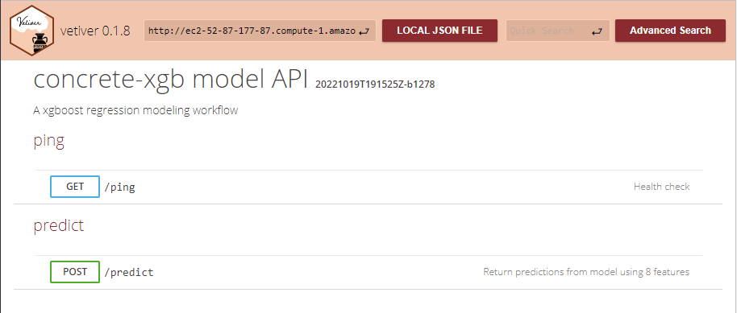

[datadavidz]
Blog
blog
Categories
All
(14)
MLOps
(2)
analysis
(1)
code
(1)
news
(2)
reticulate
(2)
sci-kit
(1)
tidymodels
(7)

Create a Dockerized API Running on an AWS EC2 instance
tidymodels
MLOps
An Application Programming Interface (API) to predict concrete compressive strength is implemented in the cloud using an AWS EC2 instance.
Oct 21, 2022
datadavidz
Pin a Vetiver Model to an AWS S3 Container
tidymodels
MLOps
An XGBoost model for predicting concrete strength is transformed into a deployable model object and uploaded to an AWS S3 container.
Oct 14, 2022
datadavidz
Gaussian Process Model for the Concrete Dataset
sci-kit
reticulate
A GP model to predict the compressive strength of concrete is built using R and Python.
Oct 13, 2022
datadavidz
Summary of Concrete Models
tidymodels
A comparison of the predictive performance and speed for the different modeling approaches.
Oct 7, 2022
datadavidz
Random Forest Model for Concrete Dataset
tidymodels
A predictive model for compressive strength of concrete is built using a random forest algorithm.
Oct 1, 2022
datadavidz
Prediction of Concrete Strength using XGBoost
tidymodels
A gradient boosting model to predict the compressive strength of concrete was built using a tidymodels approach.
Sep 24, 2022
datadavidz
Neural Network for Concrete Dataset
tidymodels
A single-layer neural network is fit to predict concrete compressive strength.
Sep 17, 2022
datadavidz
Conventional Material Models for Concrete Dataset
Fitting the concrete dataset to a pre-determined equation using a non-linear, least squares approximation.
Sep 10, 2022
datadavidz
GLM model for Concrete Strength
tidymodels
A generalized linear model (GLM) was built to predict the compressive strength of high-performance concrete formulations.
Sep 3, 2022
datadavidz
Python Setup in RStudio using reticulate
reticulate
My experience setting up Python using the
reticulate
package and the RStudio IDE.
Sep 2, 2022
datadavidz
Exploratory Analysis of the Concrete Dataset
Several exploratory data analysis (EDA) packages are used to evaluate the concrete dataset.
Aug 26, 2022
datadavidz
Introduction to the Concrete Dataset
I have a particular interest in the ability of machine learning algorithms to predict formulations and I am always searching for these types of datasets.
Aug 19, 2022
datadavidz
Post With Code
news
code
analysis
This is a post with executable code.
Aug 18, 2022
Harlow Malloc
Welcome To My Blog
news
This is the first post in a Quarto blog. Welcome!
Aug 15, 2022
Tristan O’Malley
No matching items